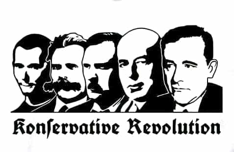

André is a young European who left his decaying country in 2012 for greener pastures. He enjoys exploring subterranean places, reading about a host of interconnected topics, and yearns for Tradition.


In a seminal article on the freudo-Marxian origins of current leftist cultural hegemony, paleoconservative William S. Lind asked how we could answer it. He put forth two strategies: either we “retake the existing institutions from cultural Marxists” or we “separate ourselves and our families from the institutions the cultural Marxists control and build new institutions for ourselves.” The second strategy, Lind said, was more promising: cultural Marxists can defend their strongholds well, efficiently punishing intellectual dissent and discriminating on ideological grounds whereas new institutions would let us free to pursue our own plans.
This was in 2007. Ten years later, time has passed, masks fell off, some road has been covered. Most of the Republican establishment came across as a bunch of sellouts, running donations campaigns so that they could maintain their lifestyle in NY or Washington while their fellow citizens were dispossessed and exploited.
A variety of dissenting currents, ranging from the 14/88 to the most moderate MRAs, succeeded at gaining cultural weight and unmasking the so-called progressives and minoritists for the destructive dictators they are. Alternative media became an institution of its own. Mainstream media, in contrast, destroyed their own credibility by melting down hysterically around Trump.
Yet, the media are not enough: treating news entertains our outlook and sharpens our awareness, but academia is a higher institution that controls the back shop of culture. At one moment or another, it has to be retaken. (Or someone creates a red pill version of the Bob Jones University.)
Granted, North American colleges turned into a big scam and SJW factories. But it isn’t bound to be always like that. The sheer existence of critical academics, from Nassim Taleb to Kevin MacDonald and Neven Sesardic, the persistence of politically incorrect studies in genetics and psychology, show that openly red-pilled scholars can survive in the academia provided they are based enough.
If you already are in the academia, and manage to find a teacher whose mind is open enough, you could pursue an indirect strategy by orientating your research towards seemingly innocuous but actually relevant topics. This would contribute to get back to the truth, to common sense, and undermine the narrative—which is still possible if done in accordance with the insular scholarly etiquette.
Marxists historically hate the middle classes. They considered the backbone of the society as “bourgeois”, that is, egotistic and “oppressive.” Their project of a classless society implicated the destruction of independent, self-owned men.
After the first World War, when Marxism and radical Leftism were one cultural agent among others, many academics were sympathetic to the middle class. An article from 1925, describing how much tradesmen and employees were hurt by inflation, fixed salaries, and Bolshevist unrest, shows open kindness for its matter. Other works quoted in the article do the same.
Now compare this with that stance:
The great enemy of a genuine revolution is, not capitalism itself, but its by-product, its bastard offspring, the middle class; and as long as the middle class remains intact in Europe, a revolution is not possible. (Gregory Zilboorg, The passing of the old order in Europe, pp.184-6)
The historical hatred of petit bourgeois had a lasting effect upon the Leftist counter-culture and eventually on culture as a whole. As many teachers enjoy working on ideas or representations, these ones could be studied from a distanced point of view. It would give us all some ammunition against the sticky “middle classes are shit” atmosphere.
Once upon a time, only a very tiny minority of whites would live in mobile homes, depend on welfare and spend their free time drinking beer and spitting. These, called derisively “white trash,” would not elicit much compassion from the wider public. Today, most whites are undergoing economic dispossession, cultural upheaval against them, demographic replacement, and even physical assaults from non-white thugs and Leftists. You don’t need to live in literal trash to now about that.
Good news, some have been giving scholarly attention to the matter and managed to get their effort published in books. Sympathetic authors include Wilmot Robertson (The Dispossessed Majority, 1972), Peter Brimelow (Alien Nation, 1995), Thilo Sarrazin (Germany Is Doing Away With Itself, 2010), and others. Antipathetic ones include J. D. Vance (Hillbilly Elegy: A Memoir of a Family and Culture in Crisis, 2016) and A. R. Hoschild, a Berkeley professor who wrote a condescending book about the small whites (Strangers in Their Own Land: Anger and Mourning on the American Right, 2016). The latter make normal people cringe, but they give an ideal point of departure to any work willing to tackle the issue and criticize the Leftist point of view.
Yes, the MRA often look like the symmetric of feminists. They tend to consider men as a class with particular interests—something akin to the feminist view of women as a class—and ask for “real equality” by pointing female privileges and how the System neglects men. Their tone can seem a bit whiny as they don’t insist much on personal improvement.
Yet, what they do is necessary and completes well our point of view: when we insist on how to improve ourselves and our lot, they put forth issues and a class solidarity we ought to use. We’ll put forth genuine sex roles after feminism is defeated. For now speaking the language of Leftism, through equality, privilege, power dynamics, and so on, will work much better in the academia. So, prepare yourself to speak sympathetically albeit abstractly, and start with J. Vandello’s notion of “precarious manhood”, not to mention some evolutionary psychology and economics, to rebut the misandric narrative.
Mostly used in France today, the expression appeared in New York and was popularized by the book of a self-claimed bobo, David Brooks. Americans use expressions such as “urban elves” with the same meaning. In France, where the expression secured a sure place, establishment bobos kept shrieking that it was baseless and nebulous: most works published on it come from bobos claiming that “bobo” doesn’t mean anything, or that “bobo” is mostly used by “populists”, or that bobos are victims of undeserved hate. Nonetheless, the very attention they pay to the expression shows it is a thorn in their side.
Providing you substantiate the expression—I did a bit here and it isn’t hard to—, you could use Marxist tools of class analysis and discourse deconstruction to highlight how the bobo identity relates to discriminating against the working class. Using Leftist tools to attack the Leftist establishment class could be efficient and, for sure, ironic. Shouldn’t urban elves be more egalitarian and less discriminant against their hard-working, berated fellows after all?
Léopoldville, Belgian Congo, prior to the 1960 separation
These ones have been massively used by cultural Marxists, then by muh race-baiting matters activists. Their very association is biased as it gives a picture linking slavery to white colonization. In truth, slavery has been practised almost universally: Africans have been enslaving each other since the dawn of times, Arabs used their knowledge of the desert to abduct blacks south of the Sahara—and they also enslaved many Europeans—, Mesoamerican empires enslaved smaller tribes, and so on. Europeans were by no means alone to practice slavery, and after they did, they were the first to actually end it.
Colonization is another matter. Motivated partly by the thirst to discover, partly by Enlightenment messianic secularism, and by intra-Western rows, it mostly consisted in developing natural wealth and building tons of infrastructures that bore by themselves no financial benefit. Serious historians showed colonization actually cost a lot to Western countries.
If one studies the matter aright, i.e. goes to real facts and detailed archives instead of pandering to the pathos-loaded pictures of race-baiters, one shall see the falsity of the latter’ view. For example, Europeans were not abducting slaves: African tribes were enslaving each other and some tribes would sell their prisoners to shipowners with a huge benefit—African elites were the first to benefit from the Europeans’ efforts.
Check Hugh Thomas’ The Slave Trade: The Story of the Atlantic Slave Trade (1997), Paul Baepler’s White Slaves, African Masters (1999), The Oxford History of the British Empire, the French historians Jacques Marseille and Bernard Lugan, and only later go back to the whiny anti-white literature prepared to dispel its clouds.

Think about Otto Weininger, Ernst Jünger, Oswald Spengler, Carl Jung, Carl Schmitt, René Guénon, Julius Evola, and many others. Even if you have to pay lip service to a seemingly negative or overcritical point of view, as to virtue-signal that you are distanced from them, speaking fairly about their thoughts and exploring the issues they raised is always interesting. It can help fostering an alternative to the Frankfurt School, the Foucaults and other far-Leftist current references.
This one may be more appealing to European readers. For a long time, hooliganism, or the peculiar hobby of some soccer supporters, have been despised by the so-called intellectuals as brutish and “uneducated.” There is classism there, as despising hooliganism is a way to come across as more refined and intelligent than the seemingly stupid who fistfight over soccer teams.
But look at that: BDSM, once considered a kind of sick perversion of sexuality that shouldn’t be too publicized, have been picked up by academics. Along with other subcultures orbiting around “alternative” sexualities, sadomasochism became a research or rather overly abstract waffle subject. At a master course, I had to go through a 28-pages text glamorizing and intellectualizing the rather weird practices of Bob Flanagan, self-proclaimed “supermasochist” who hammered a nail into his penis and got literally marked with red iron by his dominative wife.
The same can be done with hooliganism. Time to intellectualize local soccer identification, risk-taking, codified brawls and whatever can be found in the hooligan subculture.
Anti-reductionism has become fashionable since the 2000s. It is mostly applied to science, but one can expand it as a critical tool against whatever thought that tries to boil down a complex world into a rather simplistic or one-sided framework. Economic Marxism tries to reduce history to “exploitation” of a class of individuals by another, reduces individuals into products of economic conjecture, imposes a gratuitous theory of progressive steps on history and negates nature. Cultural Marxism does mostly the same with other groups considered as classes.
These are quite reductionist, as we know when we start seeing the world on sides Marxists deny or reject as non-important. Thus, opposing “reductionism” allows for attacking Leftist theories and upholding the forgotten and irreducible reality.
Democracy, parliamentarism, “equality” (that means individuals reduced to abstract unities and thought of as essentially identical), nationhood as destructive of ethnicities and cultures, so-called progress or humanism, pleas for toleration addressed to others… Postmodernism already attacks these, but when it does, it mostly uses these as a proxy to attack Western culture, whites, families and social equilibrium. We can use the desacralization of modern idols to get rid of them: unconditional rights, for example, have only fostered disorders and chaos.
This one can be made through comparing what modern philosophers promised or wanted and what we actually have. For the latter element, take a look at the school of public choices or at works such as Frank Karsten’s critique of parliamentarian cronyism.
When you start perceiving a hegemony and long for something different, you can say you want diversity. Leftists used this ploy to make society less and less ours, subvert normalcy, and push for our wholesale replacement. But as now they are hegemonic, in the sense that they decide what can be said and what cannot, and that they impose mainstream views and theories, we are those who long for something else, something non-Marxist, non-globalist, non-anti-white and anti-male.
If antiracism is a codeword for anti-white, intellectual diversity is a ticket to relax the hegemony and admit some genuine diversity of ideas among the academic. More and more people have openly asked for alternatives to stultifying Leftism. Now, intellectual diversity seems to have obtained support from Republican senators. Cases ought to be made in public. We want more alternatives considered in vivo and in journals. As universities pretend to commit to diversity, let’s take them at their word and stand against ideological discrimination. Why no affirmative action for conservative scholars?
If you have no money, potential scholarship or opportunity at a college free of charge, doing your own thing apart from the academic system may be better. But if you have a knack for the scholarly world or are already there, consider how you could use your own specialization to push for truer or alternative views. We are the real silenced voices, we are the normal, the substance of civilization, and the most skilled to find out kernels of truths when not bludgeoned by political commissars.
This is, and ought to be, only the beginning.
Read Next: 7 Research Subjects That Became Taboo After Cultural Marxists Took Over